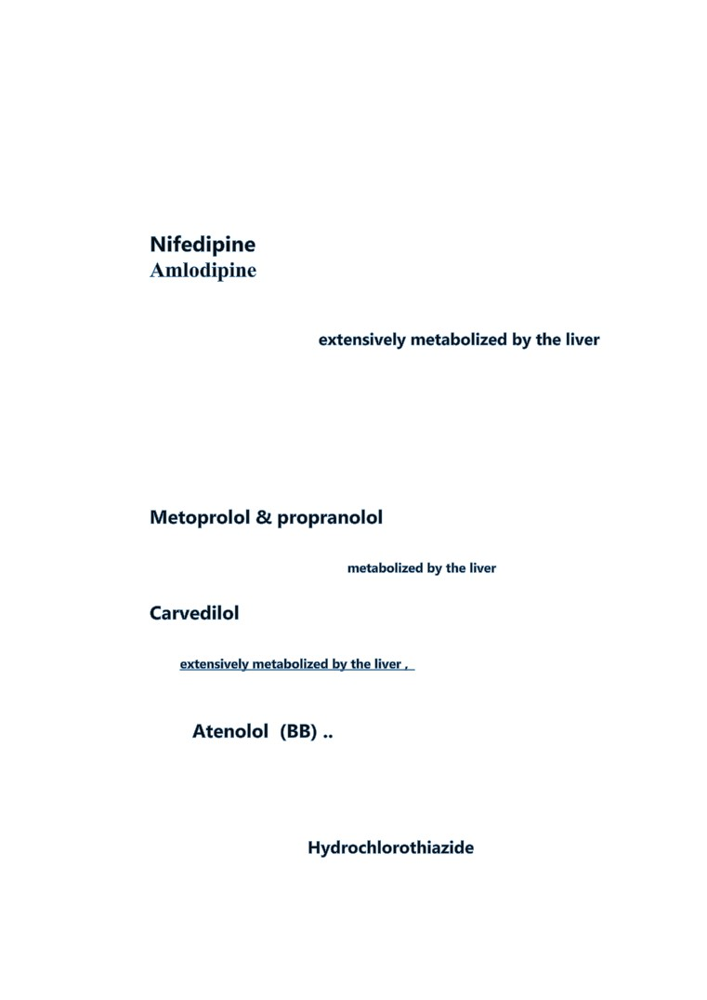
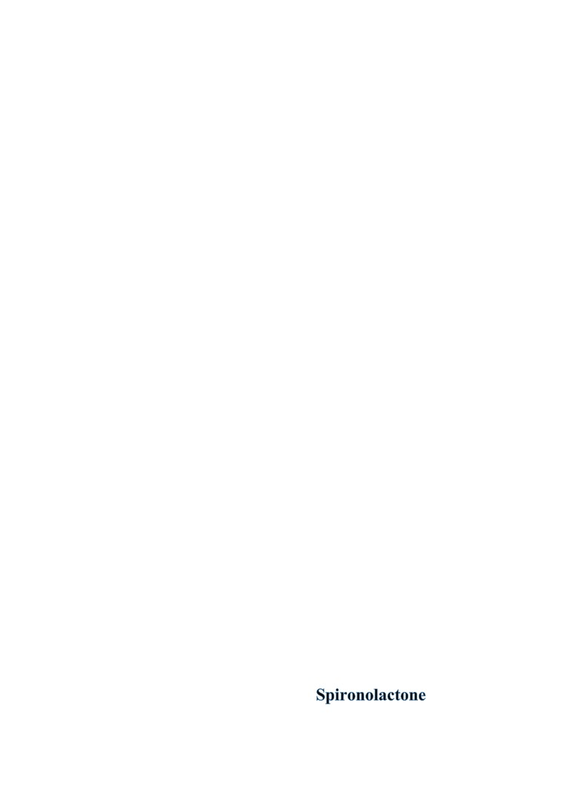
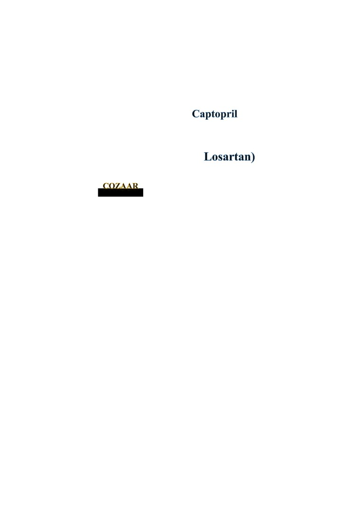

Antihypertensive Drugs
Calcium channel blockers (CCBs)
1-
↔ Liver Disease
2-
↔ Liver Disease
Calcium channel blockers (CCBs) are
CCBs should be administered cautiously and often at reduced dosages in patients
with significantly impaired hepatic function.
Periodic monitoring of liver function and for excessive pharmacologic effects
I-
Beta Blockers:
1-
) ↔ Liver Disease
Metoprolol and propranolol are primarily
PROBLEM: Drug clearance
2-
↔ Liver Disease
Carvedilol is
. The use of carvedilol is not
recommended for patients with clinically impaired hepatic function.
3-
there is no liver disease
interaction
II-
Diuretics:
1- Thiazides (Includes
) ↔ Liver
Disease
(K+ depleting diuretic)
Patients with severe liver disease or cirrhosis are very susceptible to thiazide-induced
hypokalemic hypochloremic alkalosis.
Therapy with thiazide diuretics should be administered cautiously in patients
with impaired hepatic function or progressive liver disease, and discontinued
promptly if signs of impending hepatic coma appear
2- Other thiazide diuretics
Zaroxolyn & Mykrox
Generic Name: metolazone
Hepatic side effects include a rare case of cholestatic jaundice
Lozol
Generic Name: indapamide
Hepatic side effects:
A case of reversible hepatitis associated with indapamide
Hepatic side effects are rare, at least one case of hepatitis has been reported
Aquatensen
Generic Name: methyclothiazide
Frequency not reported: Intrahepatic cholestatic jaundice

- Loop diuretics
1-Lasix
Brand Names: Lasix, Diaqua-2, Lo-Aqua//
Generic Name: furosemide
Hepatic side effects
Cholestatic jaundice may be important in patients with liver disease.
Hepatic side effects have included rare cases of cholestatic jaundice and
increased liver enzymes
2- Edecrin
Generic Name: ethacrynic acid
Hepatic side effects:
Frequency not reported: Jaundice, abnormal liver function tests
4- alternative drugs which are safe:
1))) Bumex
Generic Name: bumetanide
2)))Demadex
Generic Name: torsemide
5- Potassium-Sparing Diuretics (Includes
) ↔
Liver Disease

spironolactone and triamterene are primarily metabolized by the liver
Hepatic encephalopathy has been associated with the use of diuretics, most frequently
thiazides but also some potassium-sparing diuretics.
III- Ace Inhibitors (Includes
) ↔ Liver
Disease
Rarely, elevations of liver enzymes and/or serum bilirubin have occurred with the use
of ACE inhibitors. ARBs: Losartan (Includes
↔
Renal/Liver Disease
Brand name:
Losartan is converted in the liver to an active carboxylic acid metabolite and several
inactive metabolites, and both parent drug and metabolites are eliminated by the kidney
(35%) as well as by biliary excretion (60%).
In patients with cirrhosis, however, significantly increased plasma concentrations of
parent drug and active metabolite have been reported. Therapy with losartan
Safe antihypertensives: bumetanide & torsemide
Used with caution: Generally, most anti-hypertensives can be used with follow
up of liver function tests and serum levels of hepatically metabolized
antihypertensives like propranolol, metoprolol and CCB in cirrhotic patients
Not used at all: Labetalol & methyl dopa